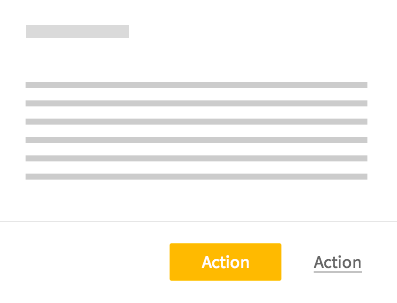

Buttons
You shouldn't have more than 2 primary button per page.
Other actions of less importance will be displayed as flat button or just links.

Save and cancel buttons should be displayed side by side, right aligned below the targeted area.
Always display the main action button on the left, and the second action button on the right:

You should avoid using icons inside the buttons, as the label should be self-explanatory. There are a few exceptions:
- When you have 2 actions that are equality likely to be considered as main action (e.g. Approve/Deny)
- When you want to provide feedback to the user, right after he has clicked on the button
Blankstates
There are 3 kinds of blankstates:
- When the page or its content can't be loaded (e.g. error). Error blankstates
- When it's the first time the user log into the application: he hasn't create any object yet, so there's nothing to show. Unique blankstate
- When the user has completed his tasks: there is no more items to show. Repeated blankstates
In any case, you should provide minimum information to the user:
- Why nothing is displayed
- What he could do to avoid feeling trapped in a dead-end path (and a CTA to help him to proceed).
- An illustration could fill the emptiness and please the user.
For unique blankstate, you can add a colorful illustration to avoid frustration on a first visit.
For repeated blank state, the illustration should be less catchy to avoid weariness. You can also build a fake view of the items that have been there:
Feedbacks
You should provide feedback for every action done by the user.
Each time a user clicks on a button, something is happening. The active style that is provided for buttons by Lucca-UI is sometimes enough to provide feedback, but when the click triggers a change in the GUI, you should provide more accurate feedback.
Feedback should always be displayed in the locus of attention of the user. If the user's just clicked on a button located on the bottom of the page, the feedback should be located in the same area. That's why Lucca-UI provides status buttons:
To show that a page is being loaded, use the progress bar and place it below the lucca-banner:

To avoid displaying an empty web page during the loading, you should build a fake view of the page that'll be loaded.
Modals
All modals might soon be replaced by side panels, as they are more up to date, and can be adapted for mobile browsing easily.
Modal
Side panel
These guidelines apply to both modals and side panels.
A modal/side panel is composed of:
- A fixed header, which has a title (optional) and a cross icon allowing to close (mandatory)
- A scrollable body
- A fixed footer, containing one or more action action buttons (which also close the modal/side panel)
Modals/side panels should be used when:
- We need the user to take an action before continuing the process. All other actions are disabled.
- When the user need to edit/read a complex item (with multiple data) showed in a collection of items (e.g. expense in a list of expenses)
Modals/side panels should NOT be used when:
- The user needs to take several steps to proceed. In that case, you should use the main view to display information, with a progress indicator and a back button.
- You just need to display additional information. In that case you should display it right in the main body (in a collapsable area or a tooltip) or, if there's a lot to show, by a link to another page.
Forms
As forms are a set of items that the user interact with, feedbacks should be given for each item as much as for the whole form.
Form input feedbacks are given on blur:
Global form feedbacks are given in the form footer, side to the submit buttons:
While there are empty mandatory fields, or fields flagged as invalid, the submit button is disabled. When the user try to click it anyway, a tooltip explain why he can't submit the form.
Save bar
Save bar should always be:
- visible,
- 100% of the targeted area's width,
- displayed at the bottom of the area where the savable items are displayed: